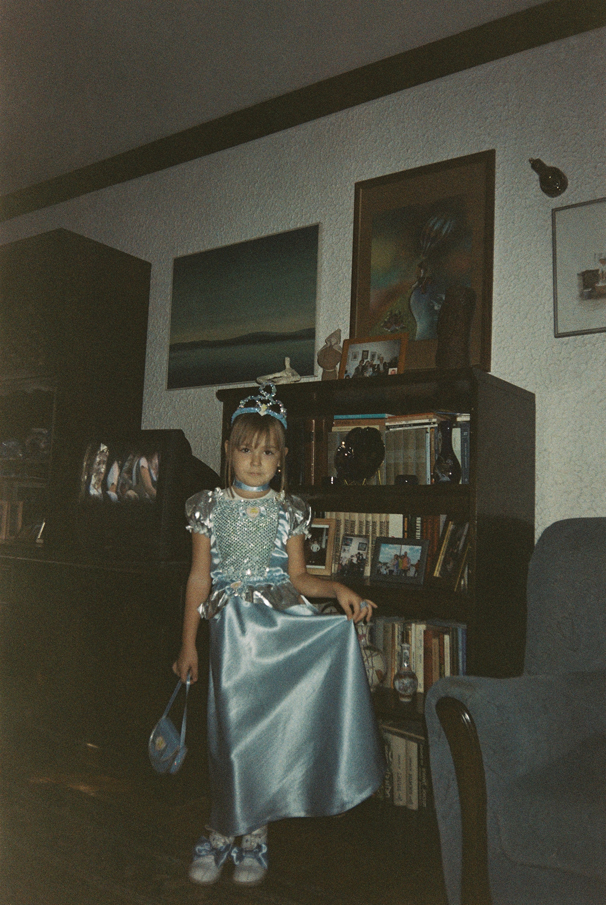

zdravo, ja sam nađa jeremić. •ᴗ•
od malena sam volela da crtam i da se izražavam kroz umetnost,
da li je to bilo crtanjem, kolažiranjem ili fotografijom.
umetnost nema pravila. bilo ko se može okušati u ovom polju,
što me je najviše i privuklo.
uvek sa sobom sam nosila posebnu svesku u kojoj sam crtala,
bilo na času biologije ili u kafiću.
od 2019. godine sam krenula da slikam sa analognom kamerom
i uvek u neizvesnosti čekala da vidim svoje fotografije.
najviše volim da slikam prirodu, arhitekture, a i svoje prijatelje.
ova strast za stvaranjem i kreiranjem
me je navela da pohađanjam smer digitalnih umetnosti
na fakultetu za medije i komunikacije,
gde sam pronašla ljubav za 3d i grafički dizajn.
od malena sam volela da crtam i da se izražavam kroz umetnost,
da li je to bilo crtanjem, kolažiranjem ili fotografijom.
umetnost nema pravila. bilo ko se može okušati u ovom polju,
što me je najviše i privuklo.
uvek sa sobom sam nosila posebnu svesku u kojoj sam crtala,
bilo na času biologije ili u kafiću.
od 2019. godine sam krenula da slikam sa analognom kamerom
i uvek u neizvesnosti čekala da vidim svoje fotografije.
najviše volim da slikam prirodu, arhitekture, a i svoje prijatelje.
ova strast za stvaranjem i kreiranjem
me je navela da pohađanjam smer digitalnih umetnosti
na fakultetu za medije i komunikacije,
gde sam pronašla ljubav za 3d i grafički dizajn.
i želja da stalno učim i rastem.
bilo da zaronim u nove medije, uronim u različite vrste
slikarstva ili planiram svoje sledeće putovanje,
uvek tražim nova iskustva i izlazim
iz svoje zone komfora.
iako sam tek na početku i još uvek učim, jedva čekam da vidim
kakvim sve radovima ima da prošaram ovaj sajt. (´｡• ᵕ •｡`)